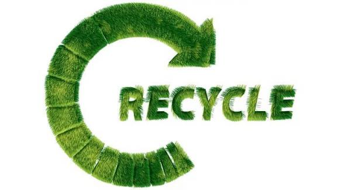
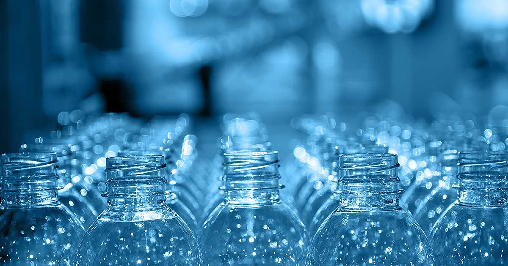
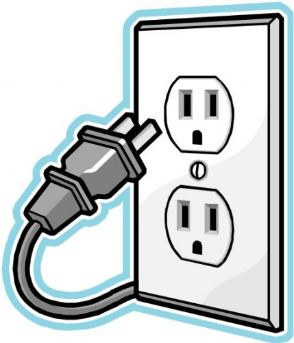
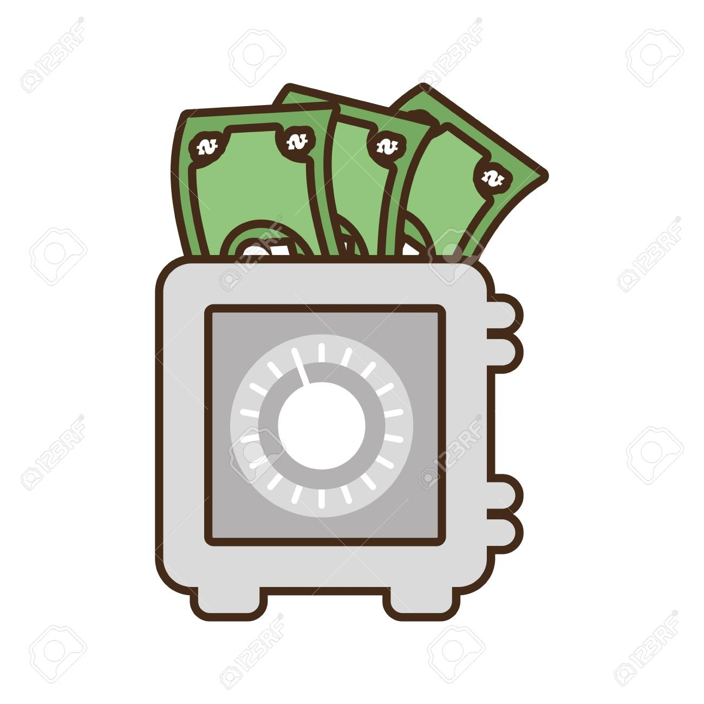
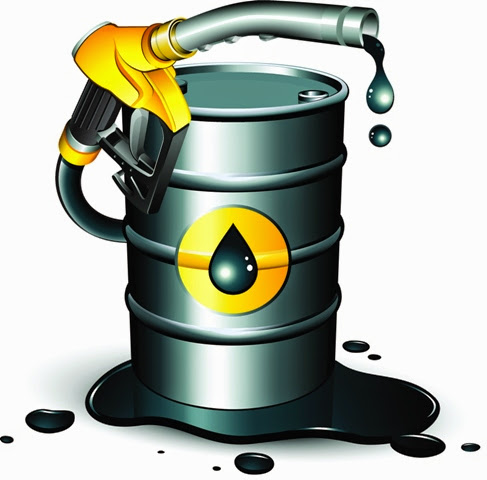
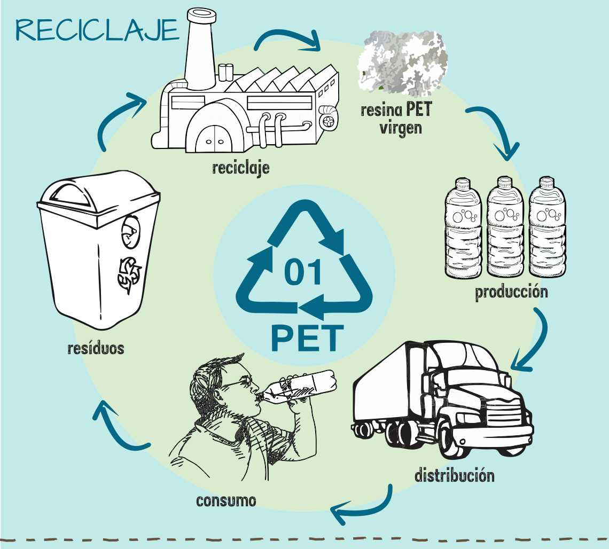

Ventajas o beneficios de reciclar PET
- Preservación recursos naturales.

- Sin duda, una de las ventajas de reciclar
más importantes es la preservación de los recursos naturales.
Al reciclar, los productos se reutilizan, por lo que no se necesita
volver a sacar la materia prima de la naturaleza, sino que podemos
alargar la vida útil de esa que ya se ha extraído.
- Disminuir la contaminación.

- Cada año decenas de toneladas de plásticos acaban en los
océanos, destruyendo el hábitat marino y la salud de nuestro
planeta. Algo tan simple como reciclar puede evitar que esto
suceda y que todos esos residuos plásticos que creamos puedan
tener una segunda vida y no terminen flotando en nuestras
costas. Sin duda, este es otro de los grandes beneficios de reciclar.
- Ahorro de energía.

- Como consecuencia de
este menor gasto se facilita el proceso de fabricación y emiten menos
gases de efecto invernadero. En muchas ocasiones los consumidores
también salen ganando, pues los productos también son más económicos.
Fabricar un producto de cero implica más procesos que si se recicla
uno preexistente, lo que comporta unos gastos de energía que se
pueden elevar hasta un 25%.
- Ahorro de dinero.

- En el reciclaje creativo, ser amable con el planeta sale a
cuenta. Utilizando material que ya no utilizamos y dándole otro
uso podemos lograr ahorrarnos algunas compras. Solo es cuestión
de utilizar un poco la imaginación.
- Ahorro de petróleo.

- Hay que tener en cuenta que el petróleo es la materia principal
mediante la cual se fabrica el plástico, por lo que uno de los
principales beneficios del reciclaje es el ahorro de un recurso
no renovable que cada día escasea más. Mediante el reciclaje
podemos ahorrarnos miles de toneladas de petróleo al año, uno
de los primeros pasos para un cambio global en el que se destierre
de una vez por todas el consumo de los combustibles fósiles.
